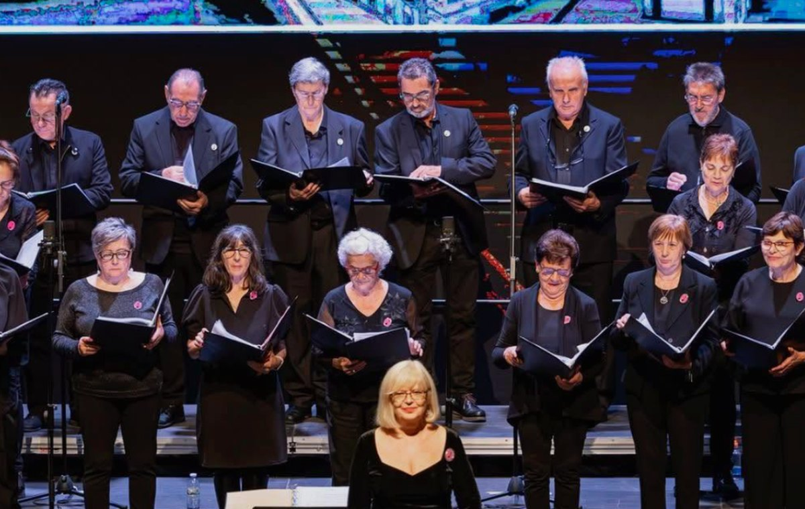

Soprano
Voces agudas femeninas. Color, brillo y línea superior del conjunto coral.
Quiero información
Una sección pensada para explicar qué supone formar parte del coro, qué cuerdas existen y cómo contactar sin fricción.
El bloque es visual, directo y fácilmente ampliable con información real de ensayos, horarios, requisitos y pruebas de voz.
Voces agudas femeninas. Color, brillo y línea superior del conjunto coral.
Quiero informaciónRegistro grave femenino. Profundidad, cuerpo armónico y equilibrio interior.
Quiero informaciónRegistro agudo masculino. Energía melódica, tensión expresiva y proyección.
Quiero informaciónRegistro grave masculino. Base armónica, estabilidad y peso sonoro.
Quiero informaciónNo hace falta convertir esta sección en un examen. Debe transmitir que el coro es accesible, pero serio: asistencia a ensayos, respeto por el trabajo musical, puntualidad y voluntad de integrarse en una agrupación estable.
Escribir al coro